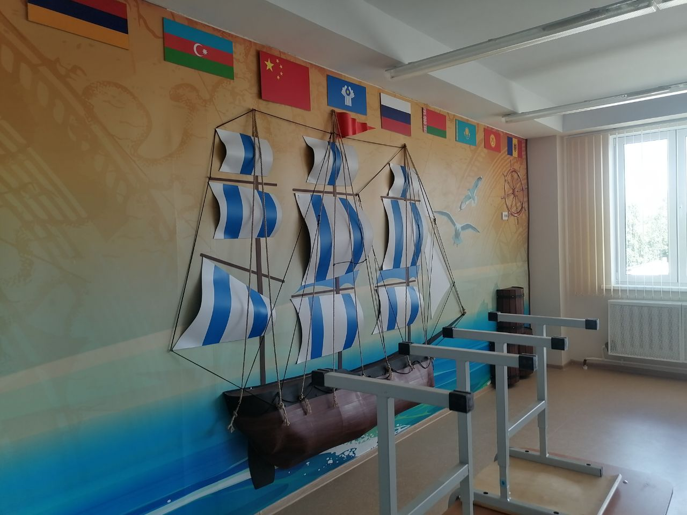
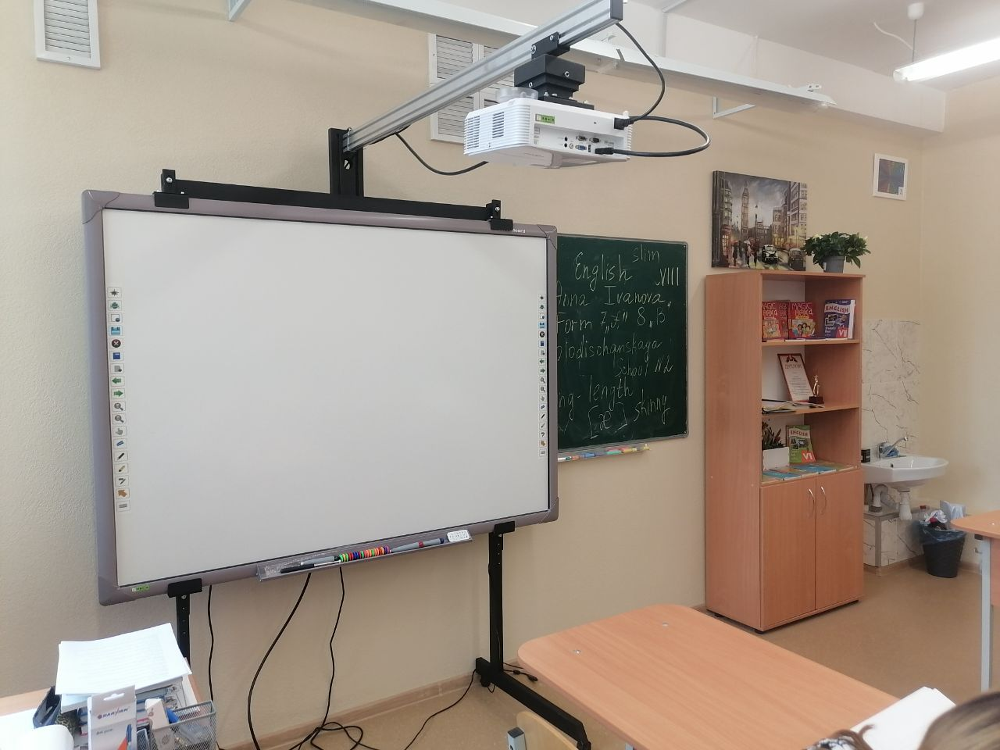
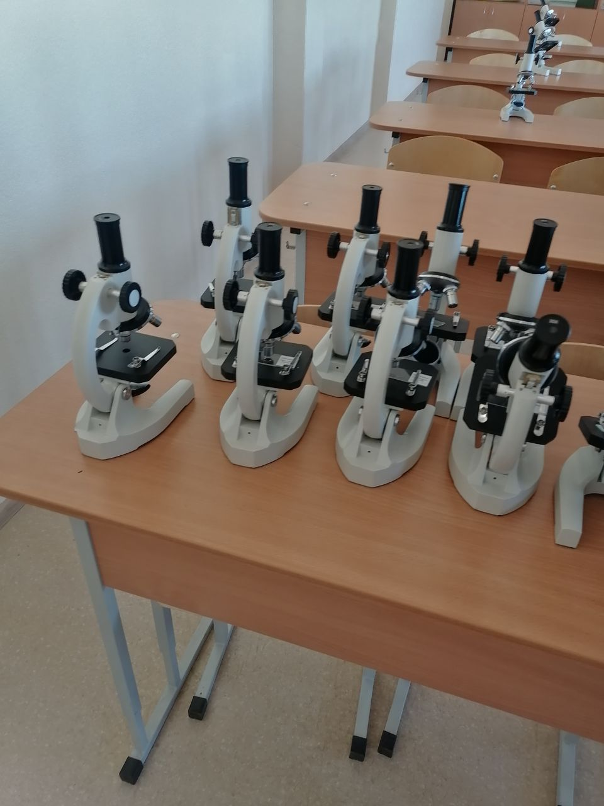
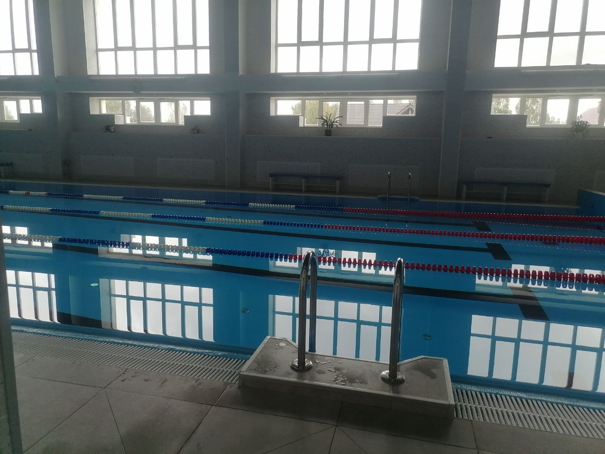
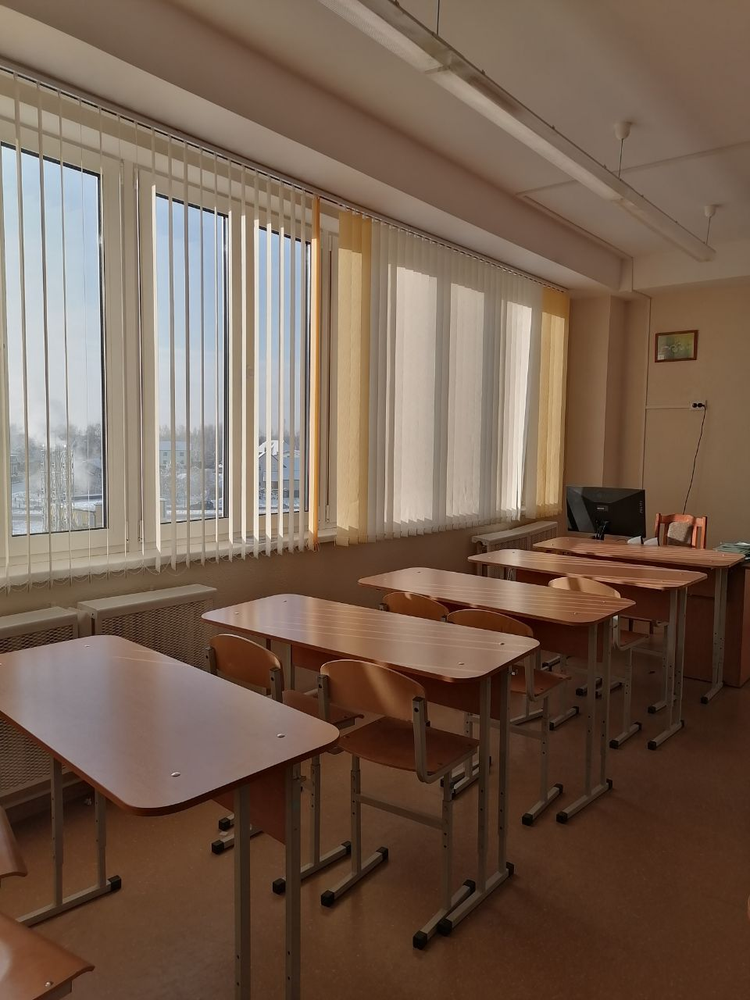

О школе
Колодищанская средняя школа номер 2 это уникальное место, где каждый учащийся может найти занятие для себя. В школе есть оборудованные классы, чтобы детям было интересно учиться. Особый интерес вызывают классы информатики, класс химии, биологии, английского и географии.
     Колодищанская средняя школа N2 готовится к открытию